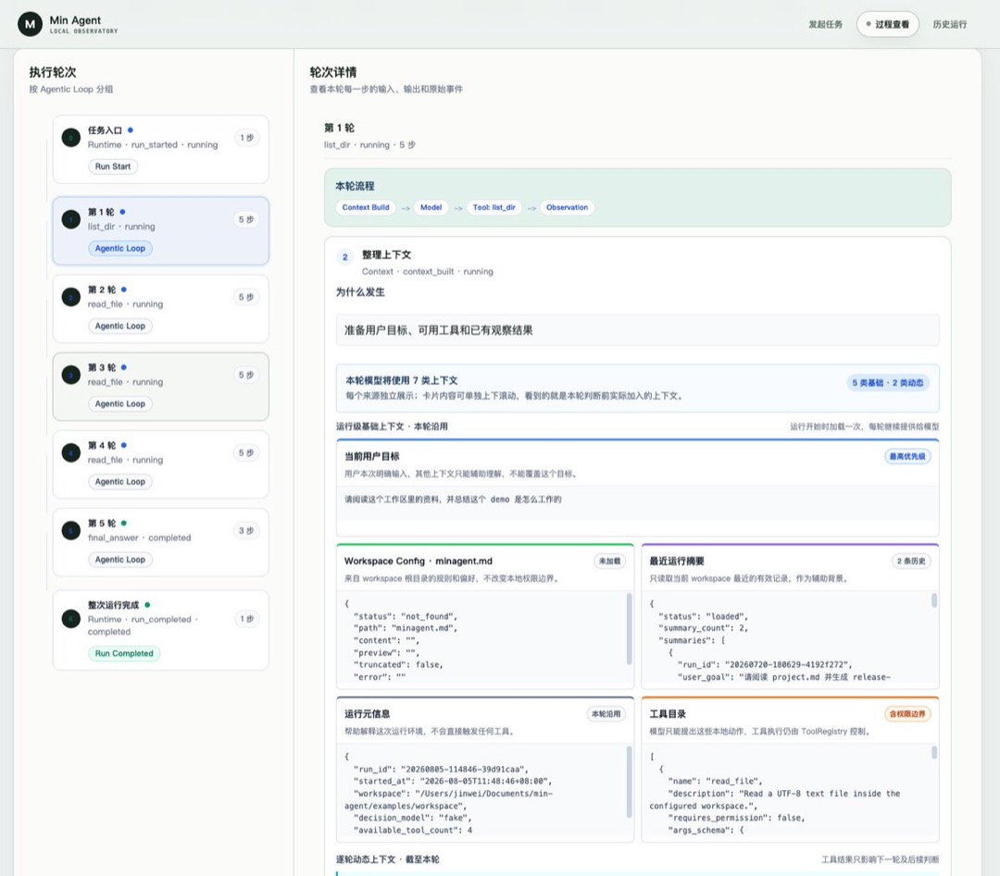
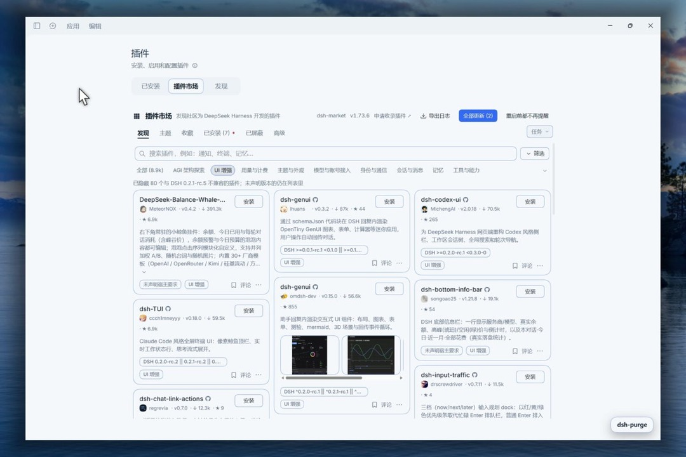

本期速览
02 Skill改造指南实现自迭代与验证
04 MinAgent开源Agent原理观察台
05 Kimi-k3.1-pro开源现破甲版
06 DSH插件导航聚合全量扩展清单
01｜小米AI产品经理面经拆解MVP定义
来源（X） · @MaxMa_27 · 2026-11-06 10:33
(项目经验与技术理解)
小米 AI 产品经理校招面经
这一期主要考察项目经验和技术理解
1. 挑一个你做过的 AI 项目，讲讲 MVP 是怎么定义的，第一版没有做哪些功能？
以客服 Agent 项目为例。
项目希望利用 AI 提升客服效率，解决传统客服在大量重复性问题上投入人力较多、响应效率不够高的问题。
在 MVP 阶段，我认为最重要的不是做一个功能复杂的 Agent 平台，而是验证 AI 能不能真正解决一线客服的实际问题。
因此，第一版只保留三个核心功能：
① 知识库检索：从企业已有的业务文档和 FAQ 中找到相关答案。
② 智能问答：结合大模型生成相对准确、自然的回复。
③ 人工转接：当 AI 无法准确回答，或者涉及复杂业务问题时，及时转交人工客服。
第一版没有做复杂的多 Agent 协作、自动退款和订单修改等功能。
原因是这些功能涉及多个业务系统，开发和验证成本较高，而且客服场景对准确性要求很高。
我认为 MVP 最重要的是用最小的投入验证最重要的业务假设。
先验证问题解决率、人工转接率和平均响应时间，再逐步扩展 Agent 的任务执行能力。
2. 手机 AI 中哪些能力适合端侧模型，哪些更适合云端？
我认为主要从任务复杂度、隐私要求、响应速度和算力成本几个维度判断。
端侧更适合高频、轻量、对实时性和隐私要求较高的场景，比如语音唤醒、实时翻译、本地相册分类和简单文本处理。
云端更适合复杂推理、长文本分析、多步骤任务规划等场景。
我更倾向于端云协同：
简单任务优先在端侧完成，复杂任务再交给云端。
这样既能保证响应速度，也能兼顾隐私和成本。
3. 如果做一个系统级 AI 助手，可以读取日历、相册、短信并调用 App 完成任务，你会怎么设计？
我认为最重要的是让用户放心地把任务交给 AI。
主要考虑三个方面：
① 权限管理：遵循最小权限原则，根据具体任务申请权限，不默认读取所有数据。
② 操作确认：搜索相册、查询日历等低风险操作可以直接执行；发送短信、删除照片、支付等高风险操作必须经过用户确认。
③ 失败兜底：记录每一步的执行状态，出现异常时判断哪些步骤已经完成，避免重复操作。
对于无法自动恢复的情况，及时告知用户，并提供人工接管入口。AI 的能力边界可以逐步扩大，但用户对数据和操作的控制权必须始终保留。
02｜Skill改造指南实现自迭代与验证
来源（X） · @xiaohuiyuan · 2026-11-06 08:12
【使用方式】
将本指南完整复制给能够访问、编辑你的 Skill 文件的 Agent（如 Claude Code、Codex），并告诉它需要改造的 Skill 路径。
Agent 应先阅读现有文件并提供简要诊断，再与用户确认标准，最后实施改造。
【改造目标】
请帮我检查并改造现有 Skill，让它从一份依赖 AI 理解和执行的操作说明，逐渐变成一套：
• 结构清晰
• 工具可靠
• 结果可验证
• 能够根据反馈持续改进的工作系统。
请遵循以下步骤。
【第一步：理解现有 Skill】
先阅读 Skill 及其关联文件、脚本和参考样例，梳理：
1. 工作地图（参考 Feature Map）
任务目标、执行步骤、输入输出、依赖关系、关键分支。
2. 工具能力（参考 CLI）
哪些操作已经有工具支持？哪些重复、确定性的步骤值得封装成工具？
3. 验证机制
目前如何判断任务完成、结果正确？哪些要求只有文字说明，没有实际检查？
4. 反馈机制
用户指出错误后，如何修正？能否避免同类问题再次发生？
尽量保留已有的有效设计，不要为了重构而重构。
【第二步：与用户确认验收标准】
先根据现有 Skill 提出你理解的标准，再向用户确认。重点询问：
1. 好结果是什么样的？
哪些要求必须满足，哪些只是偏好？
2. 最不能接受什么错误？
过去有哪些反复出现的问题？
3. 哪些环节必须人工确认？
哪些可以放心交给 Agent 自动执行？
交互要求：
• 优先从现有文档、历史反馈和样例中寻找答案。
• 只问缺失或模糊的关键问题，每轮最多 3 个。
• 不要让用户重新解释已有的信息。
【第三步：实施改造】
根据诊断结果，按需实施：
1. 结构化
建立简洁的工作地图，让 Agent 理解任务、步骤、依赖和验收条件。
2. 工具化
把重复、确定性的操作封装成可复用工具。需要时提供统一 CLI 入口，不强制所有 Skill 都开发 CLI。
3. 可验证
把明确要求转化成自动检查，记录检查对象、结果和证据。内容变化后，相关验证应重新执行；语义、审美等主观判断保留人工复核。
4. 可改进
建立反馈记录，优先把错误转化为认可样例、程序检查或工具修复，必要时再更新 Skill 说明。区分单次要求与长期规则，避免规则无限膨胀。
【第四步：测试与交付】
• 使用已有样例进行回归测试，条件允许时再增加真实任务测试。
• 对比改造前后的结果，确保原有重要功能没有退化。
• 未经用户确认，不覆盖重要原始文件或正式交付结果。
• 明确区分四类状态：
1. 自动验证通过
2. AI 评估通过
3. 人工确认通过
4. 尚未验证
最后简要说明：
1. 改造了什么，为什么？
2. 哪些问题现在可以自动检查？
3. 哪些问题仍然需要人工判断？
4. 以后用户提出反馈时，如何进入下一轮改进？
【核心原则】
• 优先解决真实问题，不追求复杂架构。
• 优先修改工具、检查和好样例，而不是不断增加提示词。
• 没有证据，不宣称验证通过。
【开始执行】
请先阅读现有 Skill，给出简要诊断；不要立即大规模重构。
引用内容
晓辉博士 @xiaohuiyuan
真正重要的是把标准写清楚，把可重复的操作做成工具，把确定的要求变成检查，让每次反馈都能留下来。
内容导航
00:00 想让Agent自己迭代
00:40 为什么先做验证
01:31 三组实践给我的启发
02:14 验证技能怎么搭建
02:49 产品地图与操作工具
03:59 改造录音转写工作流
04:58 纠错改进的五个层次
06:46 把自己的标准说清楚
08:19 循环之前先写验证
08:46 改造自己的Skill
03｜Codex接手招聘跟进2小时排3场初面
来源（X） · @0xlangeai · 2026-11-06 11:02
找工作要催HR，招人了还得催候选人。
BOSS 花近2000元，挂十来天没什么进展。
让 Codex 接手跟进，2小时安排了3场初面。
引用内容
西堂AI创业笔记 @xitang_ai
中文译文
原文
04｜MinAgent开源Agent原理观察台
来源（X） · @runmaotui · 2026-11-06 08:00
为了搞懂，我从零做了一个 Min Agent，已经开源
它是一个专门用于学习 Agent 工作原理的可视化观察台
你可以给它一个任务，然后逐轮观察：
1、上下文： 模型当前知道什么？
2、模型决策： 为什么选择这个动作？
3、工具调用： 实际执行了什么？
4、观察反馈： 执行结果如何影响下一轮？
5、权限控制： 操作被拒绝后会发生什么？
6、完成验证： 凭什么判断任务已经完成？
每一步都有真实运行记录，可以查看和回放。
支持本地运行，提供 Fake 模拟模式和 DeepSeek 真实模型模式。
不需要先读懂源码，也能直观理解 Agent Loop 的工作机制。
GitHub 开源地址：
https://github.com/JinweiX/min-agent

引用内容
奔跑的大毛腿 @runmaotui
我拆解了 Claude Code 的工作原理，亲手做了一个开源的 Min Agent 观察台，把每一步都摊开。一次讲清工作原理、使用技巧到安全边界。
不需要懂编程，只要你正在使用 Agent，就值得看看。👇 https://x.com/i/article/2118293432401846272
05｜Kimi-k3.1-pro开源现破甲版
来源（X） · @arikuschnir · 2026-11-05 20:50
中文译文
开源真的令人毛骨悚然，在 @Kimi_Moonshot 发布权重后不到24小时内，kimi-k3.1-pro 的无审查版本就已经出现了
原文
Opensource is genuinely scary, within 24 hours of @Kimi_Moonshot releasing weights there's already uncensored versions of kimi-k3.1-pro
引用内容
Router Hub @RouterHubSI
中文译文
新增模型：
[+] kimi-k3.1-pro-uncensored | 每百万输入 $0.3
[+] kimi-k3.1-pro | 每百万输入 $0.2
https://routerhub.si/models
原文
New model(s) added:
[+] kimi-k3.1-pro-uncensored | $0.3 per M input
[+] kimi-k3.1-pro | $0.2 per M input
https://routerhub.si/models
06｜DSH插件导航聚合全量扩展清单
来源（X） · @mingzi206 · 2026-11-05 22:19
原生 DeepSeek Harness 只是个毛坯房，这套清单把它爆改成满配工作站：
· 工具链与生产力：免 Key 免费全网搜索、沙箱代码执行、本地终端与底层特权调用
· 界面与工作台改造：VS Code 级超级侧边栏、超长对话折叠净化、护眼暗黑调色盘
· 破甲与底层黑客：全模型自由破甲补丁、单会话无限上下文压缩、多模型无感热切
· 插件市场直连源：收录各类一键安装源，直接在界面里像逛应用商店一样挑扩展
相当于给你的 Coding Agent 配齐了全套外挂，搞本地开发和折腾 Agent 的兄弟建议直接马住。
你在本地跑 DeepSeek 时，最想给它装个什么新外挂？
👉 开源地址：https://github.com/awesome-dsh-plugin/awesome-dsh-plugin #DeepSeek #AI #开源工具
